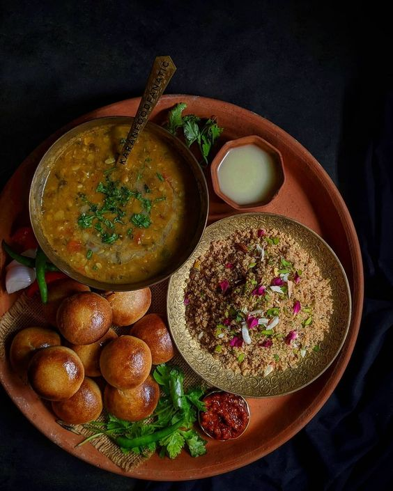
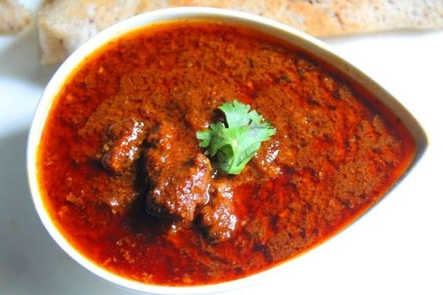
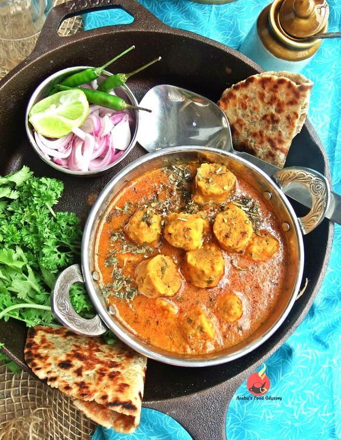

Famous Foods of Rajasthan
Dal Bati Churma

Dal Bati Churma Recipe:
- Ingredients:
- For Dal:
- 1 cup split yellow moong dal
- 1 onion, chopped
- 2 tomatoes, chopped
- 1 teaspoon ginger-garlic paste
- Spices (cumin, turmeric, red chili powder, garam masala)
- Salt to taste
- Fresh coriander for garnish
- For Bati:
- 2 cups whole wheat flour
- 1/2 cup ghee
- 1 teaspoon baking powder
- Salt to taste
- For Churma:
- 1 cup wheat flour bati, crumbled
- 1/2 cup ghee
- 1/2 cup jaggery or sugar
- Cardamom powder
- Instructions:
- Cook the dal with water and spices until soft.
- For bati, mix flour, ghee, baking powder, and salt. Form into balls and bake until golden.
- For churma, crumble the baked batis, mix with ghee, jaggery, and cardamom powder.
- Serve the dal with batis and churma on the side, garnished with coriander.
Lal Maas

Lal Maas Recipe:
- Ingredients:
- 500g mutton, cut into pieces
- 4-5 dried red chilies
- 1 tablespoon ginger-garlic paste
- 1 onion, finely chopped
- 2 tomatoes, pureed
- 1 teaspoon cumin seeds
- 1 teaspoon coriander powder
- 1/2 teaspoon turmeric powder
- Salt to taste
- 2 tablespoons mustard oil
- Fresh coriander for garnish
- Instructions:
- Soak dried red chilies in warm water for 15 minutes, then blend into a paste.
- Heat mustard oil in a pan and sauté cumin seeds and chopped onions until golden.
- Add ginger-garlic paste and cook until the raw smell disappears.
- Add the mutton pieces and cook until they are browned.
- Stir in the tomato puree, red chili paste, coriander powder, turmeric, and salt.
- Add water and simmer until the mutton is tender (about 45 minutes to 1 hour).
- Garnish with fresh coriander and serve with rice or roti.
Gatte Ki Sabzi

Gatte Ki Sabzi Recipe:
- Ingredients:
- 1 cup gram flour (besan)
- 1/2 teaspoon turmeric powder
- 1 teaspoon red chili powder
- 1 teaspoon cumin seeds
- Salt to taste
- 2 tablespoons oil
- 1 onion, chopped
- 2 tomatoes, pureed
- 1/2 cup yogurt
- 1 teaspoon garam masala
- Fresh coriander for garnish
- Instructions:
- In a bowl, mix gram flour, turmeric, red chili powder, cumin seeds, and salt. Add water to make a dough.
- Roll the dough into cylindrical shapes and steam for 15-20 minutes.
- Cut the steamed dough into small pieces.
- In a pan, heat oil and sauté onions until golden brown.
- Add tomato puree, cook until oil separates, then add yogurt and mix well.
- Add gatte pieces, garam masala, and cook for another 5 minutes.
- Garnish with fresh coriander and serve hot with roti or rice.